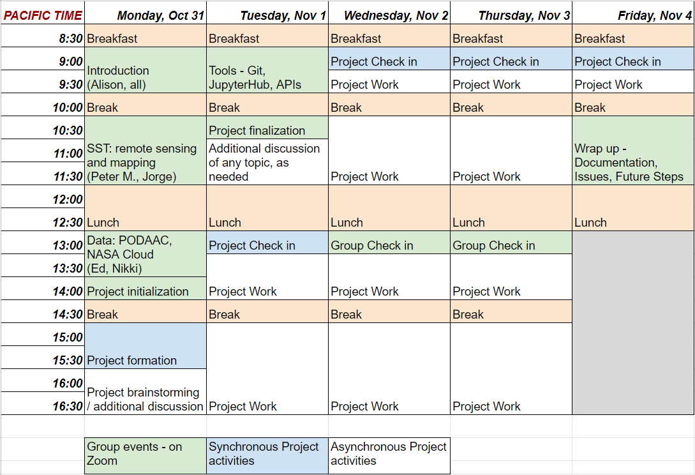
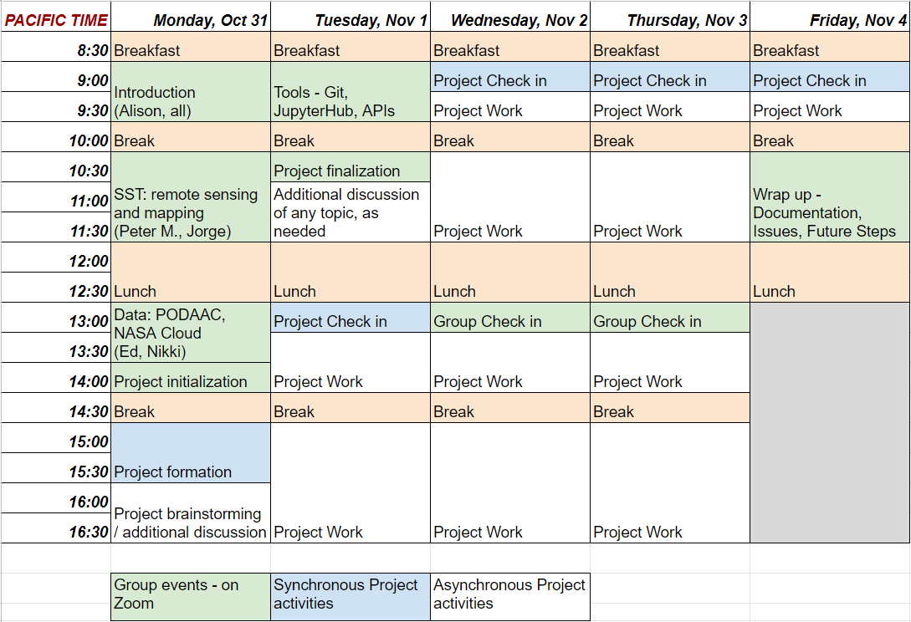

Schedule#
The schedule for the Grid SST Hackathon event is outlined below. Breakfast and lunch will be provided on location and additional details will be communicated to participants via the shared Slack workspace.

The schedule for the Grid SST Hackathon event is outlined below. Breakfast and lunch will be provided on location and additional details will be communicated to participants via the shared Slack workspace.
